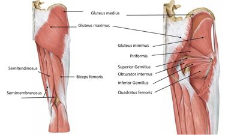
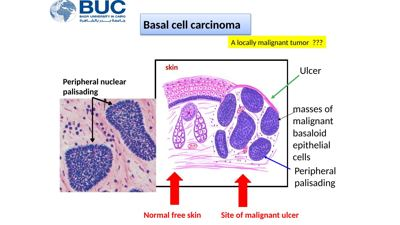
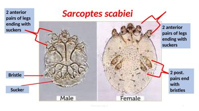
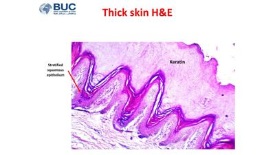

Each lecture of the module as an interactive book: the pamphlet's key facts part by part, recall drills, the checked question bank with its Final-bank numbers, flashcards and an exam mode. Every practical session comes as real slides you can quiz yourself on.




Practical exam · Wed 11 NovEvery practical session as real slides13 sessions · 344 slides. Cover the labels, find each structure, name the specimen; on the muscle slides, light up a movement or cut a nerve.